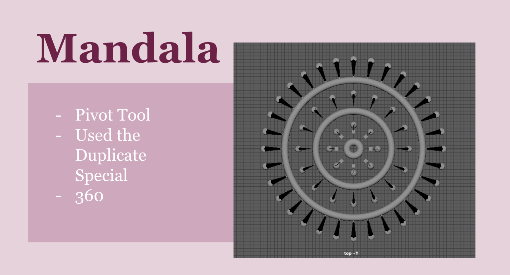
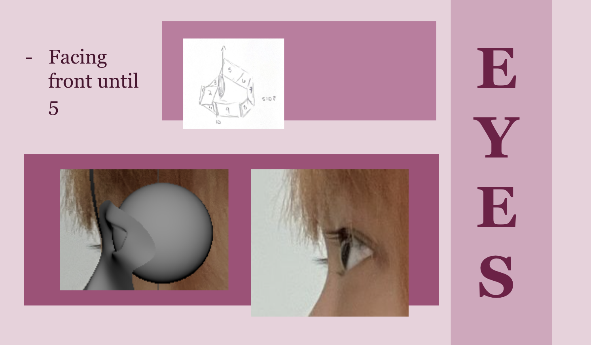
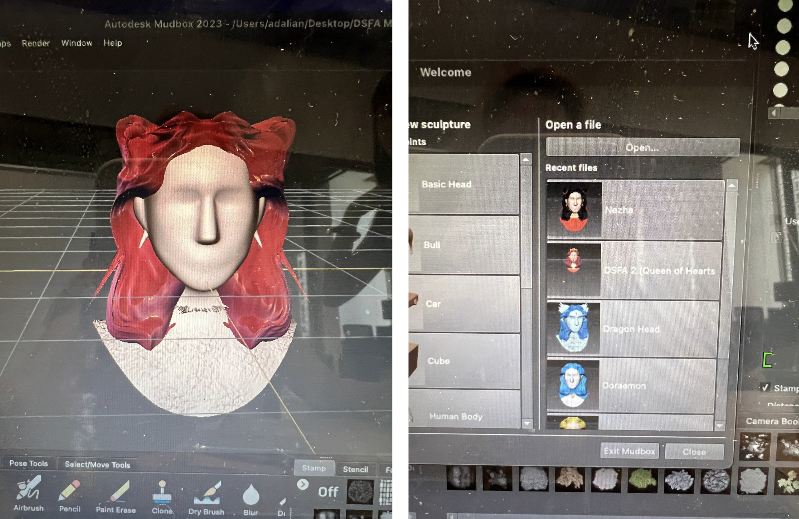
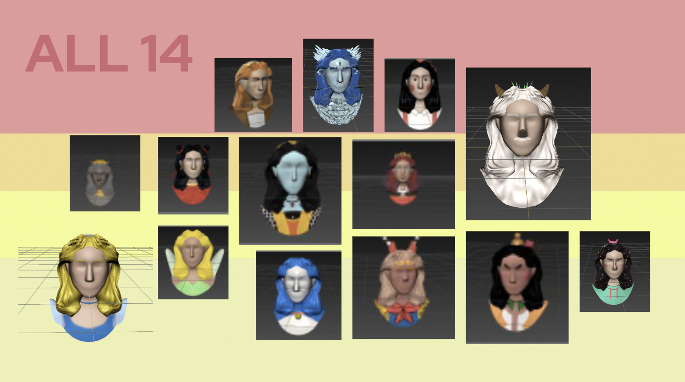
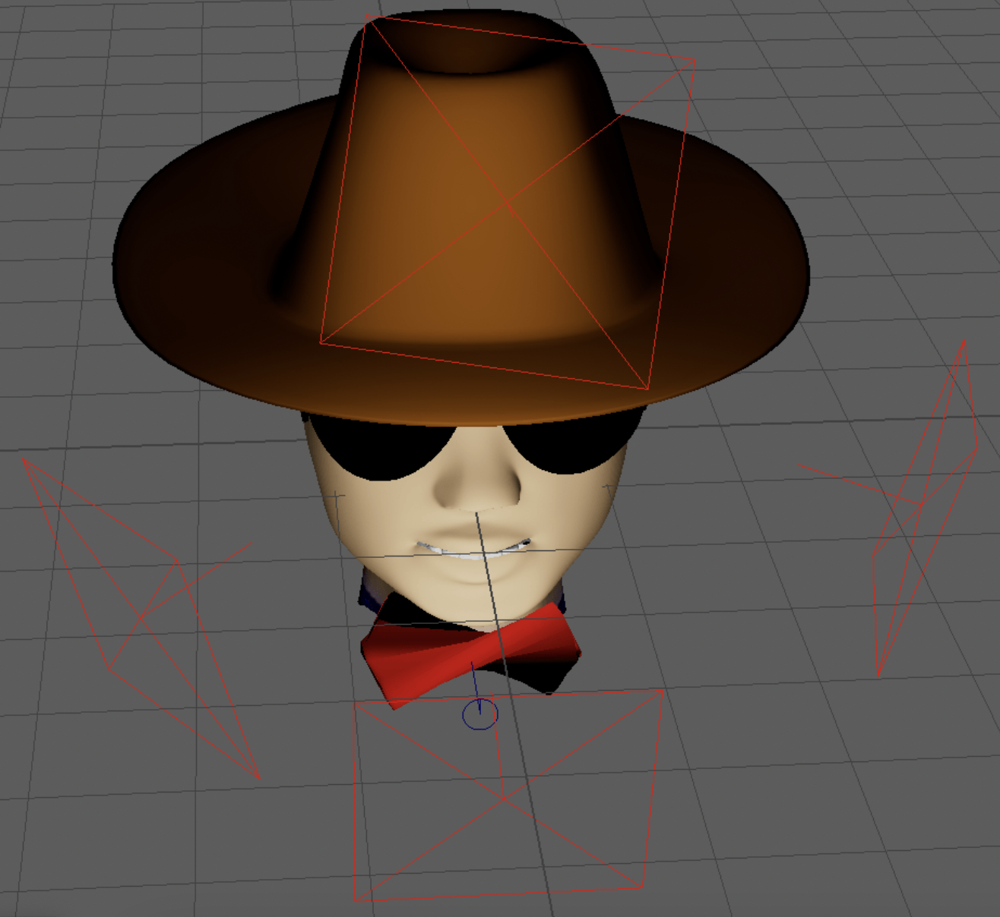

May 10, 2023
In Digital Sculpting for Facical Animations, I utilized Maya to design and recreate images. For the first project, I designed a mandala which helped me get familiar with the platform. On here, I used the pivot tool, duplicate special, and 360 tools to create this design. Using these tools, I started working on recreating my own facial fetures. I utilized my front and side photos and displayed them on Maya. Before designing, it also helped to draw out the shapes to see how many squares I needed to get the details of the features, ushc as the creases and layers. Merging to connect centers also allowed me to fix shapes together.
  Full Presentation on Google Drive →For the next project, I learned how to export the Maya model to a UV map to refine the design and add coloring. I learned how to work with a low-poly organic model to simplify the model, but creating it in Maya first definitely helped refine details beforehand. To design, I explored tools such as projection texturing and freeze. I exported my personal Maya sculpture and sculpted the hair. While adding color, I was inspired to create different designs of myself in different cartoons.
 For this final project, there are two inspirational concepts. This is inspired from my love of watching Detective Conan with my anime obsessed dad when I was a child, and then I grew out to love it personally when I grew up. For this part, I put in the red bow, and used the Conan show reference for lighting and movie inspiration. The other part is inspired from where I call home: Texas. I was born in New York, but I grew up in Texas. I lived there for over ten years, so Texas is a part of me. In Texas, the most widely known part of Texas is the cowboy culture. For this, I used the wild hair, cowboy hat, and sunglasses.
For this, I also recorded myself saying the words in order to see the movement of the lips better compared to the cartoon animation video. Because Conan is tired in this scene, his expressions aren't exaggerated and stay rather subtle. This made creating the expressions easier, however, he also spoke rather fast which made lip syncing a challenge as it was hard to get to the specific timing.
For this project, I utilized the lighting from the previous project in order to create the detective mood in my project. The original three lights are facing upward in order to create a shadow effect in the back. I also added another lighting on a top upper angle in order to emphasize the hat more.  In this project, the challenges were organizing the hair and adding in each expression at the right time, as some expressions were fast or slower for the lip movements. Through this project, I also learned a lot of skills in order to create the accessories I wanted, and to make them look the way I wanted to. In order to do so, I utilized the paint tool in order to add color onto the models. For the bow, I also utilized the twist in order to twist the cylinder which created the bow shape. However, the twist was a bit of a challenge as moving or adjusting it anyway would untwist or change the shape of the cylinder. Return to Classes →